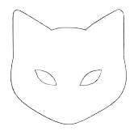
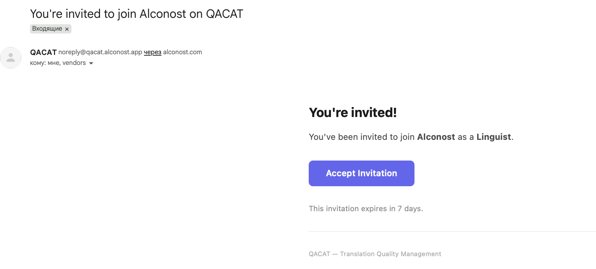
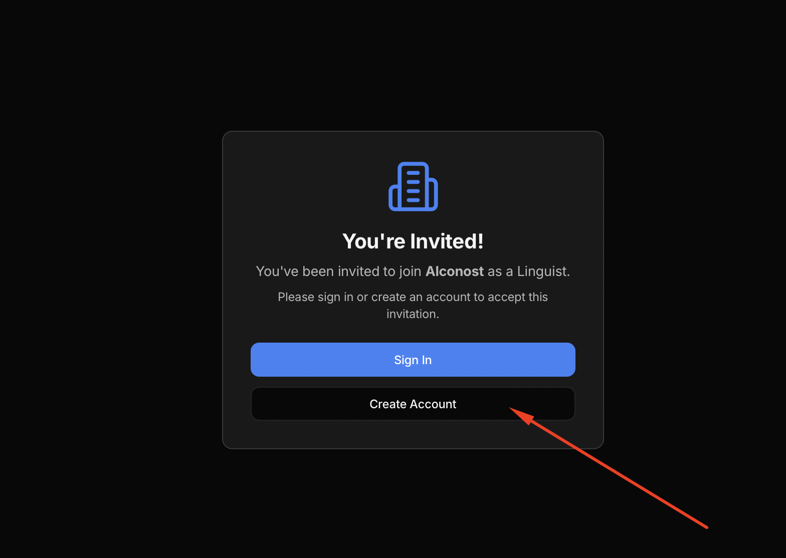
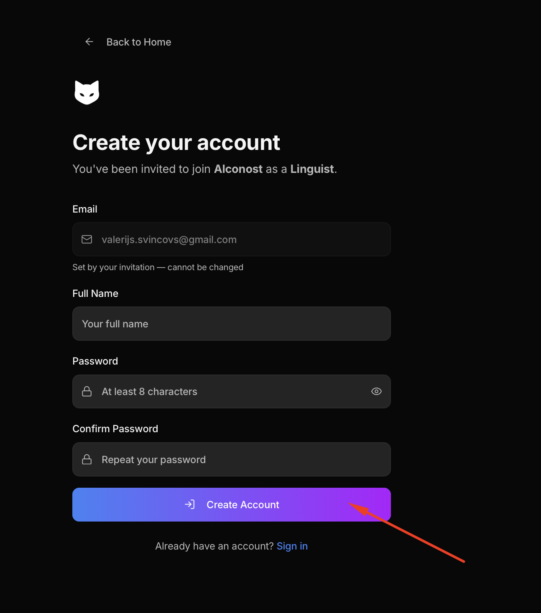
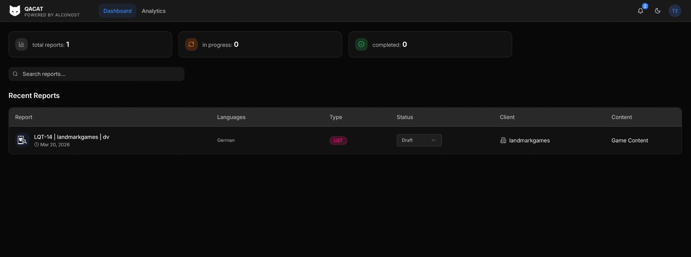
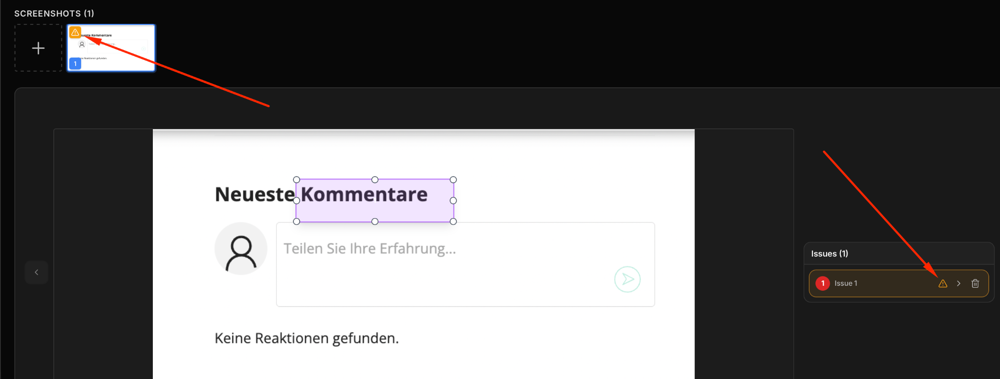
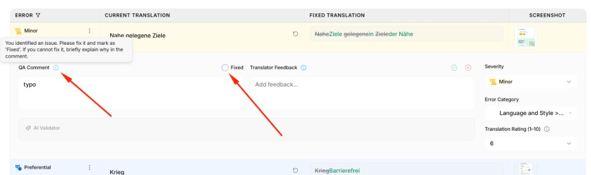

Linguist quick start
Everything you need on QACAT — clear steps, screenshots, and a short video.
If you are not registered yet:
After that, your assigned LQT report appears on your dashboard.




Optional · Use OCR Trigger if you want to pull text from the screenshot.
Alerts: If an issue is incomplete (required fields empty), fix the fields or remove the issue.

For each issue:
Before delivery: When all issues are created, the Fixed status appears in the QA table in the report. Review that table and make sure every issue is truly fixed in the project. If something stays open, explain why briefly in the comment.

When your review is ready, click Send review.
This will:
You can continue editing the report after sending it.
If you make additional changes later, click Send update to notify the team again.
Use Send update when you:
The report always remains editable — sending the review does NOT lock your work.
Short screen recording (same steps as above) — opens on YouTube:
This is a pilot on a new platform — not everything may behave perfectly yet.
If something breaks or is unclear, write to: